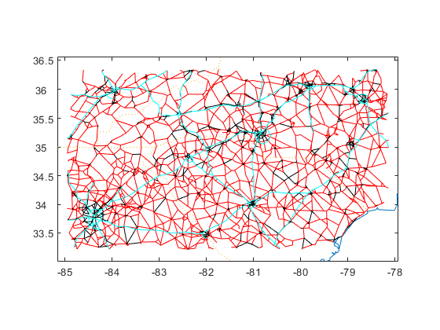
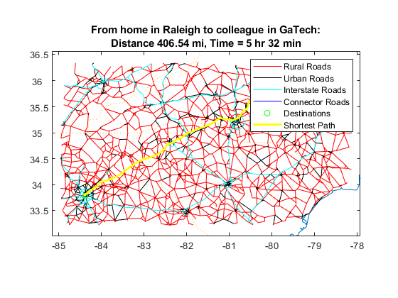

HW7
Contents
Q1 input
clear
disp('Question 1')
s = [20548 26149 36317];
dem = [40 55 35 70 25];
c = [30669 38339 30732 23830 23154];
Sup = uszip5(mand(s, uszip5('Code5')));
Cust = uszip5(mand(c, uszip5('Code5')));
Question 1
a)
disp('a)')
D = dists(Sup.XY, Cust.XY, 'mi');
F = full(sparse(argmin(D,1),1:length(dem),dem))
TCa = D.*F;
TCa = sum(sum(D.*F));
for i=1:length(s)
if any(F(i,:))
fprintf(['DC%d should supply %s products to customers in %s, '...
'respectively\n'], i, int2str(nonzeros(F(i,:))'),...
int2str(c(find(any(F(i,:),1)))));
end
end
fprintf('Total ton-miles is %.2f.\n', TCa)
a)
F =
0 0 0 70 25
0 0 0 0 0
40 55 35 0 0
DC1 should supply 70 25 products to customers in 23830 23154, respectively
DC3 should supply 40 55 35 products to customers in 30669 38339 30732, respectively
Total ton-miles is 43046.22.
b)
disp('b)')
sup = [60 90 80]';
[F,TCb] = trans(D,sup,dem);
TCb
fprintf('The change in total ton-miles is %.2f.\n', TCb-TCa);
b)
TCb =
5.7539e+04
The change in total ton-miles is 14493.13.
c)
disp('c)')
c)
Create MCNF inputs
IJC = lev2list(D);
IJCU = [IJC repmat(30, length(IJC),1)];
s = [sup' -dem];
solve
lp = mcnf2lp(IJCU,s);
[x,TCc,XFlg,out] = lplog(lp{:});
[f,TCc,nf] = lp2mcnf(x,IJC,s);
report
IJF = [IJC(:,[1 2]) f];
AF = list2adj(IJF);
F = adj2lev(AF,size(D))
TCc
fprintf('The change in total ton-miles is %.2f.\n', TCc-TCb);
F =
0 0 0 30 25
10 25 25 30 0
30 30 10 10 0
TCc =
6.4074e+04
The change in total ton-miles is 6534.29.
d)
disp('d)')
d)
input
p = [28124 27325 37421 27513];
Plts = uszip5(mand(p, uszip5('Code5')));
Create MCNF inputs
C23 = D;
C12 = dists(Plts.XY, Sup.XY, 'mi');
W = lev2adj(C12,C23);
IJC = adj2list(W);
s = [repmat(60, 4,1)' zeros(3,1)' -dem];
solve
lp2 = mcnf2lp(IJC,s);
[x,TCd] = lplog(lp2{:});
[f,TC,nf] = lp2mcnf(x,IJC,s);
Report
IJF = [IJC(:,[1 2]) f];
AF = list2adj(IJF);
[F12,F23] = adj2lev(AF,[4 3 5])
for i=1:4
fprintf(['Plant%d should supply %s products to DCs in %s, '...
'respectively\n'], i, int2str(nonzeros(F12(i,:))'),...
int2str(p(find(any(F12(i,:),1)))));
end
for i=1:3
if any(F23(i,:))
fprintf(['DC%d should supply %s products to customers in %s, '...
'respectively\n'], i, int2str(nonzeros(F23(i,:))'),...
int2str(c(find(any(F23(i,:),1)))));
end
end
F12 =
0 0 60
35 0 10
0 0 60
60 0 0
F23 =
0 0 0 70 25
0 0 0 0 0
40 55 35 0 0
Plant1 should supply 60 products to DCs in 37421, respectively
Plant2 should supply 35 10 products to DCs in 28124 37421, respectively
Plant3 should supply 60 products to DCs in 37421, respectively
Plant4 should supply 60 products to DCs in 28124, respectively
DC1 should supply 70 25 products to customers in 23830 23154, respectively
DC3 should supply 40 55 35 products to customers in 30669 38339 30732, respectively
Q2 input
clear
disp('Question 2b)')
Question 2b)
Create data
IJD = [
1 -2 14
1 -6 17
1 -8 13
1 -9 1
1 -10 16
2 -3 2
2 -4 6
2 -7 16
2 -9 10
2 -10 7
3 -4 5
3 -8 8
3 -9 9
4 -5 14
4 -7 14
5 -6 7
5 -7 1
5 -10 16
6 -8 19
6 -10 10
7 -10 1
8 -9 10];
Dijkstra's algorithm
[d,p] = dijkdemo(list2adj(IJD),3,6)
Node: 1 2 3 4 5 6 7 8 9 10
S: 0 0 1* 0 0 0 0 0 0 0
d: Inf Inf 0 Inf Inf Inf Inf Inf Inf Inf
pred: 0 0 0 0 0 0 0 0 0 0
S: 0 1* 1 0 0 0 0 0 0 0
d: Inf 2 0 5 Inf Inf Inf 8 9 Inf
pred: 0 3 0 3 0 0 0 3 3 0
S: 0 1 1 1* 0 0 0 0 0 0
d: 16 2 0 5 Inf Inf 18 8 9 9
pred: 2 3 0 3 0 0 2 3 3 2
S: 0 1 1 1 0 0 0 1* 0 0
d: 16 2 0 5 19 Inf 18 8 9 9
pred: 2 3 0 3 4 0 2 3 3 2
S: 0 1 1 1 0 0 0 1 1* 0
d: 16 2 0 5 19 27 18 8 9 9
pred: 2 3 0 3 4 8 2 3 3 2
S: 0 1 1 1 0 0 0 1 1 1*
d: 10 2 0 5 19 27 18 8 9 9
pred: 9 3 0 3 4 8 2 3 3 2
S: 1* 1 1 1 0 0 0 1 1 1
d: 10 2 0 5 19 19 10 8 9 9
pred: 9 3 0 3 4 10 10 3 3 2
S: 1 1 1 1 0 0 1* 1 1 1
d: 10 2 0 5 19 19 10 8 9 9
pred: 9 3 0 3 4 10 10 3 3 2
S: 1 1 1 1 1* 0 1 1 1 1
d: 10 2 0 5 11 19 10 8 9 9
pred: 9 3 0 3 7 10 10 3 3 2
S: 1 1 1 1 1 1* 1 1 1 1
d: 10 2 0 5 11 18 10 8 9 9
pred: 9 3 0 3 7 5 10 3 3 2
d =
18
p =
3 2 10 7 5 6
Q3 input
clear
disp('Question 3')
Ral = [-78.701389 35.7725];
Atl = [-84.39 33.771944];
XY1 = [Ral; Atl];
Question 3
Get road network
expansionAroundXY = 0.1;
[XY2,IJD,isXY,isIJD] = subgraph(usrdnode('XY'),...
isinrect(usrdnode('XY'),boundrect(XY1,expansionAroundXY)),...
usrdlink('IJD'));
Label type of road
s = usrdlink(isIJD);
isI = s.Type == 'I';
isIR = isI & s.Urban == ' ';
isIU = isI & ~isIR;
isR = s.Urban == ' ' & ~isI;
isU = ~isI & ~isR;
Plot roads
makemap(XY2,0.03)
h = [];
h = [h pplot(IJD(isR,:),XY2,'r-','DisplayName','Rural Roads')];
h = [h pplot(IJD(isU,:),XY2,'k-','DisplayName','Urban Roads')];
h = [h pplot(IJD(isI,:),XY2,'c-','DisplayName','Interstate Roads')];

Add connector roads from cities to road network
[IJD11,IJD12,IJD22] = addconnector(XY1,XY2,IJD);
h = [h pplot(IJD12,[XY1; XY2],'b-','DisplayName','Connector Roads')];
h = [h pplot(XY1,'go','DisplayName','Destinations')];
Convert road distances to travel times (needs to be after ADDCONNECTOR)
v.IR = 75;
v.IU = 65;
v.R = 50;
v.U = 25;
v.C = 20;
IJT = IJD;
IJT(isIR,3) = IJD(isIR,3)/v.IR;
IJT(isIU,3) = IJD(isIU,3)/v.IU;
IJT(isR,3) = IJD(isR,3)/v.R;
IJT(isU,3) = IJD(isU,3)/v.U;
IJT22 = IJD22;
IJT22(:,3) = IJT(:,3);
IJT12 = IJD12;
IJT12(:,3) = IJD12(:,3)/v.C;
Find shortest path
[~,P] = dijk(list2adj([IJT12; IJT22]),1:2);
[T, p] = dijk(list2adj([IJT12; IJT22]),1,2);
Distance of shortest time route
W = list2adj([IJD12; IJD22]);
D = locTC(pred2path(P,1,2),W);
h = [h ...
pplot({p},[XY1;XY2],'y-','LineWidth',2,'DisplayName','Shortest Path')];
title(sprintf(['From home in Raleigh to colleague in GaTech:\n'...
'Distance %.2f mi, Time = %d hr %d min'],D,floor(T),round(60*(T-floor(T)))));
legend(h),shg
fprintf(['From home in Raleigh to colleague in GaTech: Distance %.2f mi,'...
'Time = %d hr %d min.\n'],D,floor(T),round(60*(T-floor(T))));
From home in Raleigh to colleague in GaTech: Distance 406.54 mi,Time = 5 hr 32 min.

Q4 input
clear
disp('Question 4')
T = 26;
rng(1964);
D = round([gamrnd(6,4,T,1) gamrnd(4,3,T,1)]);
K = [60 50;
55 45;
50 35];
Cp = [12 20;
75 130;
35 60];
h = 0.4/365.25*7;
Ci = cumsum(Cp,1)*h
Cs = [400 600;
90 110;
50 60];
yinit = [0 0;
0 0;
0 sum(D(1:2,2))];
yfinal = zeros(3,2);
k0 = [1 0;
1 0;
1 0];
M = size(K,1);
T = size(D,1);
G = size(K,2);
Question 4
Ci =
0.0920 0.1533
0.6669 1.1499
0.9352 1.6099
Create MILP model
Cp = reshape(repmat(Cp,[T 1 1]),M,T,G);
Ci = reshape(repmat(Ci,[T+1 1 1]),M,T+1,G);
Ci(:,1,:) = 0;
Cs = reshape(repmat(Cs,[T 1 1]),M,T,G);
mp = Milp('PPlan');
mp.addobj('min',Cp,Ci,Cs,zeros(M,T,G));
for g = 1:G
for t = 1:T
for m = 1:M-1
mp.addcstr({[1 -1],{[m m+1],t,g}},{[1 -1],{m,[t t+1],g}},0,0,'=',0)
end
mp.addcstr({M,t,g},{[1 -1],{M,[t t+1],g}},0,0,'=',D(t,g))
for m = 1:M
mp.addcstr({m,t,g},0,0,'<=',{K(m,g),{m,t,g}})
end
end
for m = 1:M
mp.addcstr(0,0,{-1,{m,1,g}},{m,1,g},'<=',k0(m,g))
for t = 2:T
mp.addcstr(0,0,{-1,{m,t,g}},{[1 -1],{m,[t t-1],g}},'<=',0)
end
end
end
for m = 1:M, for t = 1:T, mp.addcstr(0,0,0,{m,t,':'},'=',1), end, end
mp.addlb(0,horzcat(reshape(yinit,M,1,G),zeros(M,T-1,G),reshape(yfinal,M,1,G)),0,0);
mp.addub(Inf,horzcat(reshape(yinit,M,1,G),inf(M,T-1,G),reshape(yfinal,M,1,G)),1,1);
mp.addctype('C','C','B','B');
Solve using Gurobi
clear params
model = mp.milp2gb;
params.outputflag = 1;
result = gurobi(model, params);
x = mp.namesolution(result.x);
TC = result.objval
Academic license - for non-commercial use only
Gurobi Optimizer version 9.0.3 build v9.0.3rc0 (win64)
Optimize a model with 546 rows, 630 columns and 1502 nonzeros
Model fingerprint: 0x00bc7797
Variable types: 318 continuous, 312 integer (312 binary)
Coefficient statistics:
Matrix range [1e+00, 6e+01]
Objective range [1e-08, 6e+02]
Bounds range [1e+00, 1e+01]
RHS range [1e+00, 5e+01]
Presolve removed 121 rows and 135 columns
Presolve time: 0.01s
Presolved: 425 rows, 495 columns, 1232 nonzeros
Variable types: 286 continuous, 209 integer (209 binary)
Root relaxation: objective 1.436099e+05, 489 iterations, 0.01 seconds
Nodes | Current Node | Objective Bounds | Work
Expl Unexpl | Obj Depth IntInf | Incumbent BestBd Gap | It/Node Time
0 0 143609.941 0 78 - 143609.941 - - 0s
0 0 144268.858 0 80 - 144268.858 - - 0s
0 0 144272.967 0 80 - 144272.967 - - 0s
0 0 144272.967 0 81 - 144272.967 - - 0s
0 0 144518.079 0 77 - 144518.079 - - 0s
0 0 144529.424 0 86 - 144529.424 - - 0s
0 0 144530.767 0 86 - 144530.767 - - 0s
0 0 144530.803 0 86 - 144530.803 - - 0s
0 0 144580.900 0 85 - 144580.900 - - 0s
0 0 144582.791 0 86 - 144582.791 - - 0s
0 0 144582.827 0 86 - 144582.827 - - 0s
0 0 144596.542 0 89 - 144596.542 - - 0s
0 0 144596.823 0 89 - 144596.823 - - 0s
0 0 144611.494 0 86 - 144611.494 - - 0s
0 0 144612.835 0 88 - 144612.835 - - 0s
0 0 144620.523 0 90 - 144620.523 - - 0s
0 0 144621.149 0 91 - 144621.149 - - 0s
0 0 144621.180 0 91 - 144621.180 - - 0s
0 0 144621.373 0 90 - 144621.373 - - 0s
0 0 144621.373 0 90 - 144621.373 - - 0s
H 0 0 151086.83915 144621.373 4.28% - 0s
0 2 144621.373 0 89 151086.839 144621.373 4.28% - 0s
* 125 125 50 148909.56988 145026.758 2.61% 22.7 0s
* 434 363 49 148695.48529 145045.947 2.45% 22.1 1s
H 882 622 148637.53046 145662.276 2.00% 30.9 3s
* 1039 650 61 148472.31239 145662.276 1.89% 29.5 4s
H 1145 588 147385.66297 145736.900 1.12% 30.5 4s
1382 549 infeasible 25 147385.663 145873.501 1.03% 32.8 5s
4115 1137 147105.156 23 71 147385.663 146448.884 0.64% 37.0 10s
H 4675 1286 147385.66295 146480.361 0.61% 36.9 10s
H 6724 1866 147361.29364 146614.082 0.51% 36.5 12s
H 7723 2067 147344.15250 146667.693 0.46% 36.4 14s
8667 2240 147047.097 31 49 147344.152 146709.161 0.43% 35.9 15s
13522 2608 infeasible 32 147344.152 146854.682 0.33% 35.2 20s
18138 2520 147154.049 29 51 147344.152 146941.400 0.27% 35.4 25s
22584 2162 147136.669 25 73 147344.152 147020.046 0.22% 35.0 30s
H28256 1182 147335.69610 147133.190 0.14% 34.6 34s
28598 1156 cutoff 28 147335.696 147148.368 0.13% 34.6 35s
Cutting planes:
Gomory: 28
Cover: 3
Implied bound: 6
Clique: 2
MIR: 75
StrongCG: 1
Flow cover: 136
Flow path: 1
Inf proof: 31
Zero half: 5
Explored 30712 nodes (1052661 simplex iterations) in 37.05 seconds
Thread count was 4 (of 4 available processors)
Solution count 9: 147336 147344 147361 ... 151087
Optimal solution found (tolerance 1.00e-04)
Best objective 1.473356960999e+05, best bound 1.473356960999e+05, gap 0.0000%
TC =
1.4734e+05
Report results
Fp = x.Cp;
Fi = x.Ci;
for g = 1:G
mdisp(D(:,g)',[],[],['D' num2str(g)])
mdisp(Fp(:,:,g),[],[],['Fp' num2str(g)])
mdisp(Fi(:,:,g),[],[],['Fi' num2str(g)])
end
D1: 1 2 3 4 5 6 7 8 9 10 11 12 13 14 15 16 17 18 19 20 21 22 23 24 25 26
--:--------------------------------------------------------------------------------------------------------
1: 27 15 22 45 28 11 24 42 45 20 18 18 47 27 15 18 27 23 29 12 24 26 33 25 27 16
Fp1: 1 2 3 4 5 6 7 8 9 10 11 12 13 14 15 16 17 18 19 20 21 22 23 24 25 26
---:--------------------------------------------------------------------------------------------------------
1: 54 60 0 0 50 50 60 60 60 60 60 0 0 0 0 0 0 0 0 0 50 50 50 0 0 0
2: 27 37 0 50 50 50 0 0 50 50 50 0 0 50 50 50 0 0 0 0 50 50 50 0 0 0
3: 27 37 0 50 50 50 0 0 50 50 50 0 0 50 50 50 0 0 0 0 50 50 50 0 0 0
Fi1: 1 2 3 4 5 6 7 8 9 10 11 12 13 14 15 16 17 18 19 20 21 22 23 24 25 26 27
---:-------------------------------------------------------------------------------------------------------------------
1: 0 27 50 50 0 0 0 60 120 130 140 150 150 150 100 50 0 0 0 0 0 0 0 0 0 0 0
2: 0 0 0 0 0 0 0 0 0 0 0 0 0 0 0 0 0 0 0 0 0 0 0 0 0 0 0
3: 0 0 22 0 5 27 66 42 0 5 35 67 49 2 25 60 92 65 42 13 1 27 51 68 43 16 0
D2: 1 2 3 4 5 6 7 8 9 10 11 12 13 14 15 16 17 18 19 20 21 22 23 24 25 26
--:--------------------------------------------------------------------------------------------------------
1: 6 5 8 9 7 4 12 14 21 8 6 13 25 7 5 14 10 9 25 4 13 12 12 19 19 17
Fp2: 1 2 3 4 5 6 7 8 9 10 11 12 13 14 15 16 17 18 19 20 21 22 23 24 25 26
---:--------------------------------------------------------------------------------------------------------
1: 0 0 39 50 0 0 0 0 0 0 0 29 35 0 0 0 10 30 50 50 0 0 0 0 0 0
2: 0 0 28 0 0 0 26 35 0 0 0 29 35 0 0 0 10 9 31 35 0 0 0 19 19 17
3: 0 0 28 0 0 0 26 35 0 0 0 29 35 0 0 0 10 9 31 35 0 0 0 19 19 17
Fi2: 1 2 3 4 5 6 7 8 9 10 11 12 13 14 15 16 17 18 19 20 21 22 23 24 25 26 27
---:------------------------------------------------------------------------------------------------------------
1: 0 0 0 11 61 61 61 35 0 0 0 0 0 0 0 0 0 0 21 40 55 55 55 55 36 17 0
2: 0 0 0 0 0 0 0 0 0 0 0 0 0 0 0 0 0 0 0 0 0 0 0 0 0 0 0
3: 11 5 0 20 11 4 0 14 35 14 6 0 16 26 19 14 0 0 0 6 37 24 12 0 0 0 0
Q5 input
clear
disp('Question 5')
K = [20;30];
D = [25 15 10 50 25 15]';
Cp = [200; 800];
h = 0.08/3+0.11;
Ci = cumsum(Cp)*h;
Ck = [3000; 9000];
yinit = [5; 0];
yfinal = [7; 4];
M = size(K,1);
T = size(D,1);
Question 5
Create MILP model
Cp = reshape(repmat(Cp,[T 1 1]),M,T);
Ck = reshape(repmat(Ck,[T 1 1]),M,T);
Ci = reshape(repmat(Ci,[T+1 1 1]),M,T+1);
Ci(:,1,:) = 0;
mp = Milp('PPlan');
mp.addobj('min',Cp,Ci,Ck);
for t = 1:T
for m = 1:M-1
mp.addcstr({[1 -1],{[m m+1],t}},{[1 -1],{m,[t t+1]}},0,'=',0)
end
mp.addcstr({M,t},{[1 -1],{M,[t t+1]}},0,'=',D(t))
mp.addcstr({':',t},0,'<=',{K',{':',t}})
for m = 1:M
mp.addcstr(0,{m,t},0,'<=',30)
end
end
mp.addlb(0,[yinit zeros(M,T-1) yfinal], 0)
mp.addub(Inf,[yinit repmat(Inf,M,T-1) yfinal], 1)
mp.addctype('I','C','B')
Solve using Gurobi
clear params
model = mp.milp2gb;
params.outputflag = 1;
result = gurobi(model, params);
x = mp.namesolution(result.x);
TC = result.objval;
D = D';
Academic license - for non-commercial use only
Gurobi Optimizer version 9.0.3 build v9.0.3rc0 (win64)
Optimize a model with 30 rows, 38 columns and 78 nonzeros
Model fingerprint: 0x319d59f0
Variable types: 14 continuous, 24 integer (12 binary)
Coefficient statistics:
Matrix range [1e+00, 3e+01]
Objective range [1e-08, 9e+03]
Bounds range [1e+00, 7e+00]
RHS range [1e+01, 5e+01]
Found heuristic solution: objective 221238.00000
Presolve removed 18 rows and 14 columns
Presolve time: 0.00s
Presolved: 12 rows, 24 columns, 45 nonzeros
Variable types: 0 continuous, 24 integer (8 binary)
Root relaxation: objective 2.171447e+05, 15 iterations, 0.00 seconds
Nodes | Current Node | Objective Bounds | Work
Expl Unexpl | Obj Depth IntInf | Incumbent BestBd Gap | It/Node Time
0 0 217144.667 0 2 221238.000 217144.667 1.85% - 0s
H 0 0 220117.33333 217144.667 1.35% - 0s
H 0 0 219871.33333 217144.667 1.24% - 0s
0 0 cutoff 0 219871.333 219871.333 0.00% - 0s
Explored 1 nodes (17 simplex iterations) in 0.01 seconds
Thread count was 4 (of 4 available processors)
Solution count 3: 219871 220117 221238
Optimal solution found (tolerance 1.00e-04)
Best objective 2.198713333334e+05, best bound 2.198713333334e+05, gap 0.0000%
Report results
Fp = x.Cp;
Fi = x.Ci;
Fk = x.Ck;
disp('Production plan is described below')
mdisp(D)
mdisp(Fp)
mdisp(Fi)
mdisp(Fk)
fprintf('The total cost with this plan is $%.2f.\n', TC)
Production plan is described below
D: 1 2 3 4 5 6
-:------------------------
1: 25 15 10 50 25 15
Fp: 1 2 3 4 5 6
--:------------------------
1: 20 35 30 10 25 26
2: 25 15 20 40 25 19
Fi: 1 2 3 4 5 6 7
--:-----------------------
1: 5 0 20 30 0 0 7
2: 0 0 0 10 0 0 4
Fk: 1 2 3 4 5 6
--:------------------
1: 1 1 1 1 1 1
2: 1 1 1 1 1 1
The total cost with this plan is $219871.33.